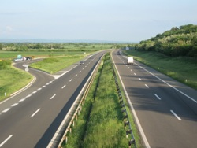
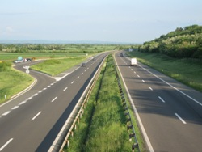

О сајту
САЈТ ЈЕ У ФАЗИ ИЗРАДЕ
Идеја овог сајта је да пружи основне информације о Сараорцима, како онима који су чули за ово место или га посетили, тако и онима који живе у њему. Сматрамо да ово насеље заслужује једну овакву презентацију која може подсетити људе, на можда и заборављене чињенице, из историје овог места. Такође, овај сајт пажњу посвећује и тренутним догађањима и стању у Сараорцима.
Позивамо све који желе да допринесу у изради и унапређивању овог сајта да нас контактирају путем email адресе или Facebook странице. Такође, целокупан изворни код (source code) овог сајта се налази на Гитхабу. Сваки допринос, на било који начин, је добродошао.
E-mail: saraorci.rs@gmail.com
Facebook страница: fb.me/saraorci.rs
Тренутно наопходно на сајту:
- Лого сајта
- Добро усликана фотографија центра Сараораца која ће стајати при врху странице (тренутно стоји слика Велике Мораве)
- Фотографије и видео снимци, новији и старији
- Текстови који би унапредили презентацију
- Провера информација са сајта и означавање референци (треба пријавити потенцијално нетачне информације и одговарајући делови текста ће бити означени наранџастом бојом)
- Треба додати прогнозу за неколико дана унапред уместо само тренутне температуре
О Сараорцима (преузето са
Википедије)
Сараорци су насељено место града Смедерева, Подунавског округа (до 1968. године општина Велика Плана). Насеље се налази у алувијалној равни Велике Мораве, удаљено 25 km од Смедерева. Према попису из 2011. село броји 2107 становника. Кроз сараорачки атар данас протичу две реке: Језава и Велика Морава.
Назив и историја села (преузето са
Википедије)
По предању село је добило име по зидарима Сараорима, који су зидали Смедеревску тврђаву. Претпоставља се да су живели поред реке Мораве.
Село је настало пре 18. века. У периоду 1945—1964. Сараорци су били седиште истоимене општине, којој су припадала села Лозовик, Лугавчина, Милошевац и Осипаоница. Статус варошице је од 22.марта 1896.године варошица Сараорци.
Сараорци се налазе јужно од Смедерева. Нема података на основу којих би се са сигурноћу могло говорити о оснивању и старости овога насеља. Али судећи по траговима из прошлости, који се налазе у близини овога места, као и по имену, које наводи на помисао да су овде некада можда живели сараори, који који су радили на подизању смедеревског града, могло би се рећи да је овде постојало старије насеље.
У арачким списковима (прочитај више) се помињу Сараорци који су имали 1818. године 38 кућа. Године 1846. у Сараорцима је било 99 кућа, а по попису из 1921. године у њима је било 405 кућа са 2.109 становника.
По предању су Сараорци раније били у Селишту, на десној страни Јазове, и од ње удаљени око 200 метара. У Селишту су биле куће Павковића, Бекића, Ракића и Матића, па су они због „тескобе“ прешли на данашња места. Данас су у Селишту куће и имање Благојевића. Павковићи (данас имају разна презимена) су „ударили колац овоме месту“. Њихов је предак Павко дошао у Селиште, и од скора је у Селишту постојала стара Павкова кућа. Бекићи (са разним презименима) су старином од Косова, а Ракићи (Матковићи) и Матићи су из „Ерске“ – од Драгачева. Радуновићи, Илићи (Брадуловићи), и Јовановићи су од Косова, Илићи (Брадиловићи), Милосављевићи и Гојковићи су старином од Косова.. (подаци крајем 1921. године).
Друштвени живот (преузето са
Википедије)
У Сараорцима постоји једна основна школа, ОШ „Херој Света Младеновић“, стара 48 година. Почела са радом 18. јануара 1968. године, а пре тога је постојала школа „Вук Караџић“. Школство постоји од 1836. године.
Сараорци имају богат историјат КУД-а „Раде Марковић“. КУД је основан 60-их година 20. века и до сада је учествовао на свим важнијим регионалним и републичким такмичењима. Фудбалски клуб „САСК“ основан је 1933. године. Рукометни клуб основан 1972. године и такмичио се у свим ранговима такмичења, а највећи успех је улазак у другу савезну лигу сезоне 1998/99. године, када због НАТО агресије престаје са такмичењем, а касније и са радом.
На територији Сараораца постоји један споменик културе — механа породице Младеновић, изграђена почетком 19. века, а категорисана као споменик културе од изузетног значаја 1981/1983.
На старом гробљу у Сараорцима постоји задужбина Јована Вићентијевића-Масараоша подигнута 1925. године.
Демографија (преузето са
Википедије)
Према попису из 2011. године у насељу Сараорци живи 1711 пунолетан становник, а просечна старост становништва износи 41,3 година (39,3 код мушкараца и 43,3 код жена). У насељу постоји 689 домаћинстава, а просечан број чланова по домаћинству је 3,06.
Сараорци су великим делом насељени Србима (према попису из 2002. године), а у последња три пописа примећено је опадање броја становника.
Познати Сараорчани (преузето са
Википедије)
- Танасије Младеновић (1913—2003), песник и политичар
- Светомир Младеновић Света (1916–1942), учесник Наородноослободилачке борбе и народни херој Југославије
- Радмила Димић (1922—1991), интерпретатор српских народних песама
- Петар Вићентијевић (1927—2001), оптичар
- Ратко Матић (-), дугогодишњи наставник у основној школи и истакнути друштвени радник током 70-тих, 80-тих и 90-тих година 20. века
- Зоран Јанковић, градоначелник Љубљане
- Горица Мојовић, посланица у Народној скупштини Републике Србије 2008.−2012. и 2012.−2014. године.
Занимљивости
Велика Морава је највећа река која је цела у Србији.
Сараорци је последње насеље у општини Смедерево на правцу према Великој Плани.

 
